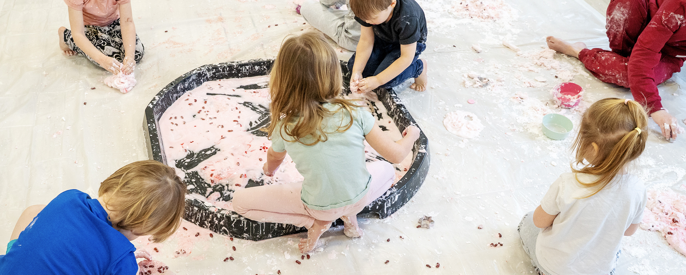
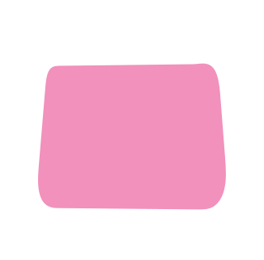


Dzięki metodzie zanurzenia w języku, a także za sprawą wykorzystania różnorodnych aktywności i pomocy dydaktycznych dzieci w sposób naturalny chłoną język obcy, z otwartością powtarzając i utrwalając poznane zagadnienia.
Podczas zajęć zapraszamy dzieci do wspólnego nazywania określonych elementów przy użyciu pełnych konstrukcji zdaniowych. Śpiewamy piosenki oraz proponujemy dzieciom wspólne zabawy ruchowe dla skuteczniejszego utrwalenia informacji.
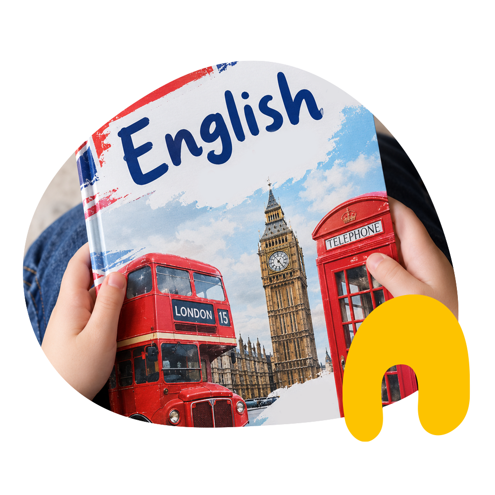
🇬🇧Zajęcia logopedyczne prowadzone są w przyjaznej dla dzieci atmosferze. Logopeda prowadzi diagnozę logopedyczną obejmującą przesiewowe badania mowy we wszystkich grupach przedszkolnych, badania artykulacji, sprawności aparatu artykulacyjnego i słuchu fonematycznego.
Terapia obejmuje korygowanie wad wymowy, utrwalanie poprawnej wymowy, sprawnianie narządów artykulacyjnych, rozwijanie mowy czynnej i biernej oraz usprawnianie procesów analizy i syntezy słuchowej.
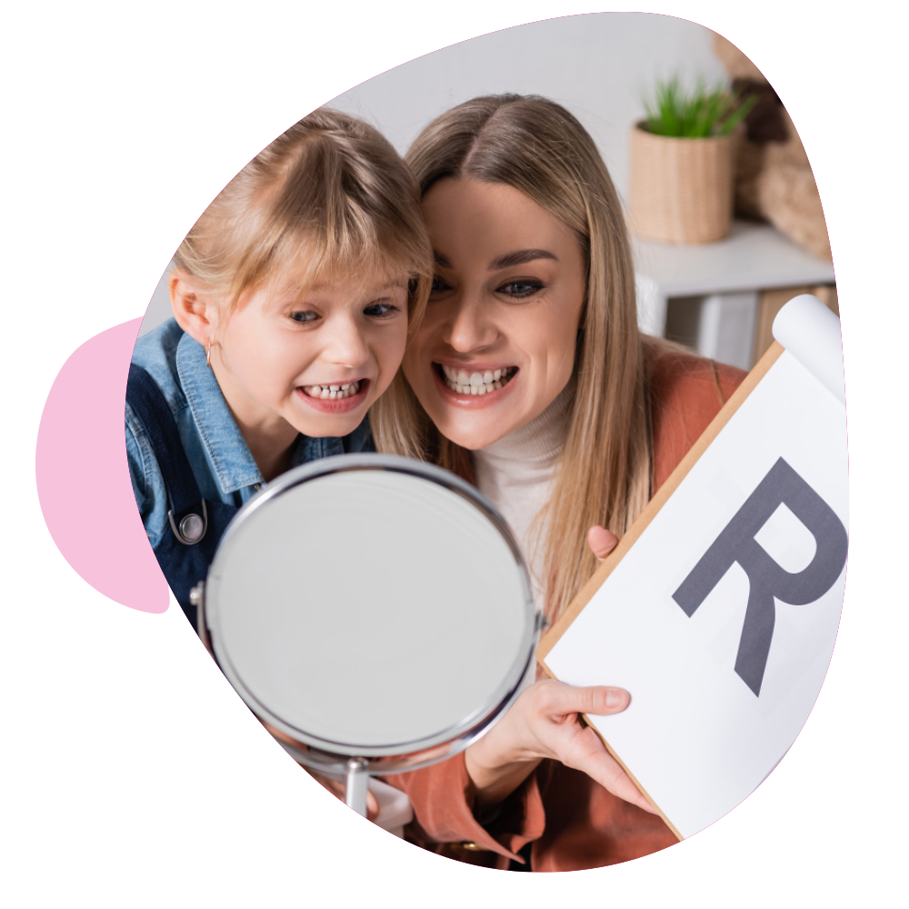
Joga w naszym przedszkolu ma charakter zajęć relaksacyjnych i ogólnorozwojowych. Dba o harmonijny rozwój dziecka wpływając na jego rozwój fizyczny, prawidłową postawę ciała, zwiększa zmysł równowagi i koordynacji ruchu oraz koncentrację uwagi uczestników.
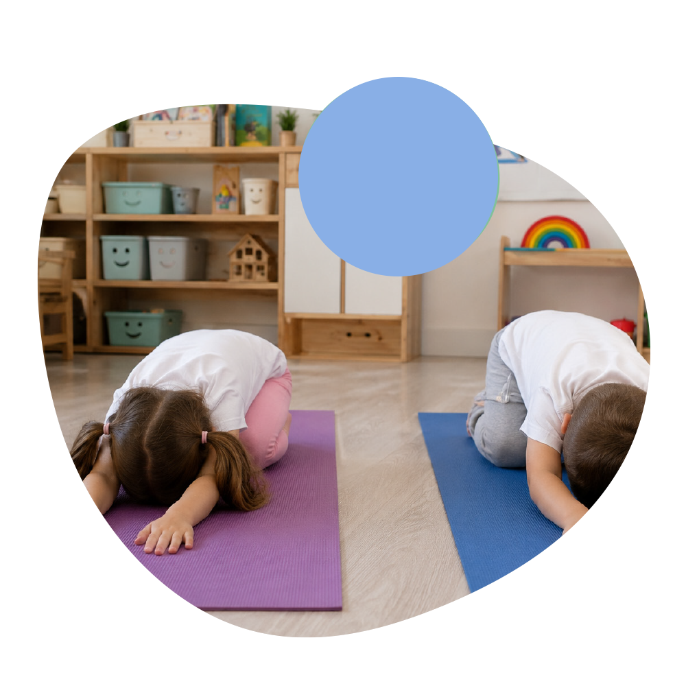
Sensoplastyka to zajęcia prowadzone w formie swobodnej, radosnej zabawy, bliskiej dziecięcej ciekawości i naturalnej potrzebie poznawania świata. Wspiera rozwój dziecka w wielu obszarach, szczególnie w zakresie integracji sensorycznej; kształtuje także umiejętności społeczne takie jak współpraca, komunikacja, dzielenie się czy ustalanie i przestrzeganie zasad.
Podczas zajęć dzieci mają okazję zanurzyć się w świecie różnorodnych kolorów, zapachów, faktur i konsystencji. Mogą dotykać, przelewać, ugniatać, mieszać, tworzyć różne masy i badać materiały wszystkimi zmysłami. Takie doświadczenia rozwijają kreatywność, pewność siebie, sprawczość oraz zdolności poznawcze.
Zajęcia prowadzone są raz w miesiącu dla dzieci wszystkich grup przez certyfikowanego trenera Sensoplastyki I stopnia.
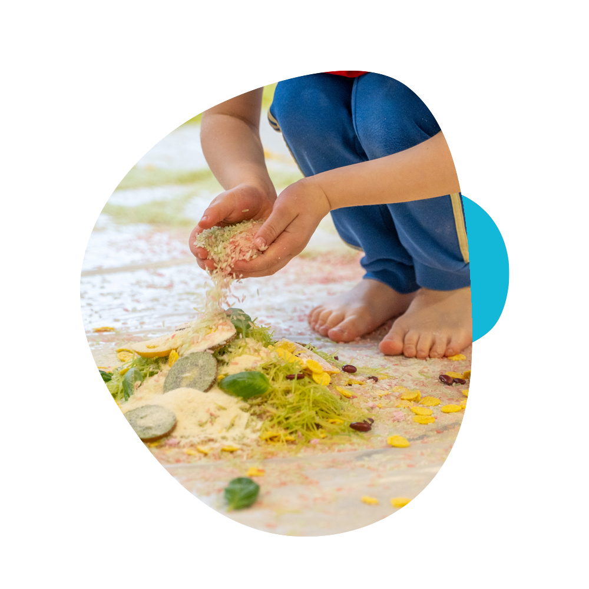
Celem zajęć jest rozbudzanie u dzieci miłości do muzyki poprzez śpiew, ruch, grę na instrumentach, taniec i improwizację. Program oparty jest na teoriach pedagogów K. Orffa, E. Jaquesa-Dalcroze oraz E. E. Gordona.
Podczas zajęć nie używa się słów, nie wydaje poleceń. Dzieci zanurzane są w melodie śpiewane w różnych skalach i metrach, współtworzą muzykę, proponują, doświadczają i eksperymentują.
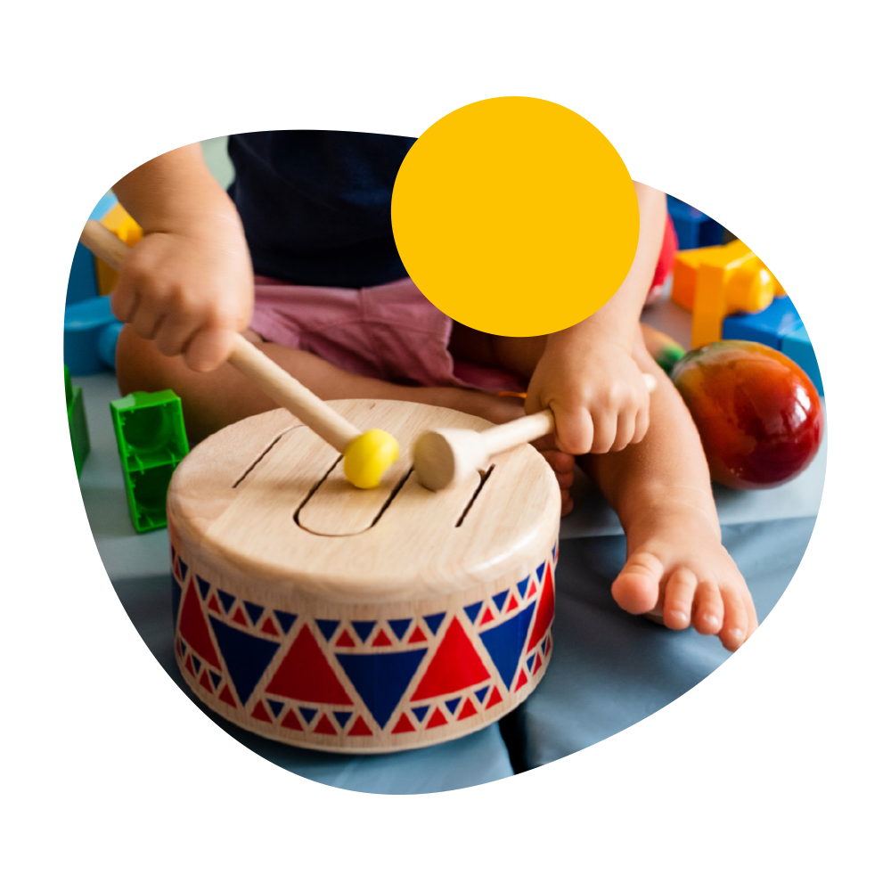
Nasza autorska arteterapia rozwojowa koncentruje się na wzmacnianiu autentycznego potencjału dziecka poprzez swobodną twórczość. W atmosferze pełnej akceptacji rozwijamy u dzieci kluczowe zasoby osobiste, takie jak pewność siebie, poczucie wartości i sprawstwa, inteligencję emocjonalną oraz umiejętność uważnego wyciszenia. Zajęcia budują w dzieciach odporność psychiczną i pozwalają im rozkwitać we własnym tempie.
W arteterapii sięgamy po autorskie narzędzia wspierające rozwój dziecka: grę rozwojową „Głaskotki” oraz książki Ewy Baranowskiej-Jojko, m.in. „Arteterapię przez cały rok” – zeszyt ćwiczeń i zabaw dla dzieci w wieku 5+, który rozwija życzliwość, wdzięczność i poczucie wspólnoty.
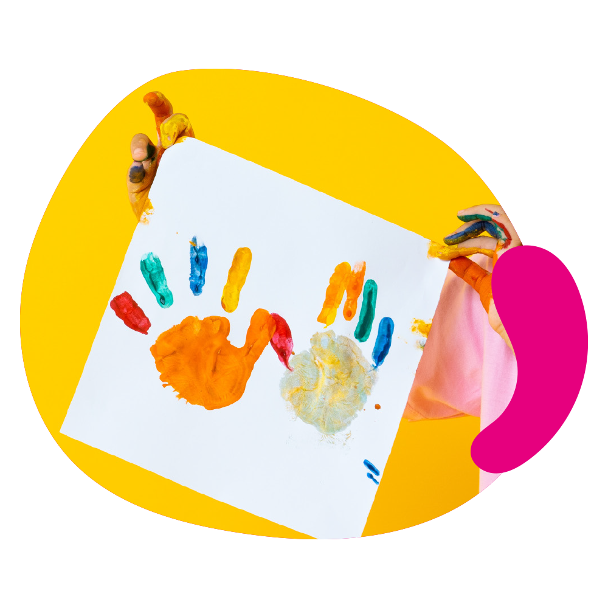
Spotkania z ceramiką to kreatywne warsztaty sensoryczne rozwijające wyobraźnię i motorykę małą, kształtujące cierpliwość, wytrwałość i umiejętność planowania pracy. To tutaj powstają naczynia, płaskorzeźby i figurki, które są piękną, trwałą pamiątką, a często także prezentem.
Podczas zajęć, oprócz zdolności motorycznych, rozwijamy także wytrwałość, umiejętność widzenia przestrzennego i pracy zespołowej. Dzieci są świadkami procesu, w którym z kawałka gliny tworzy się coś namacalnego i zachwycającego; we własnym tempie dochodzą do wniosku, że na piękny efekt końcowy warto poczekać.
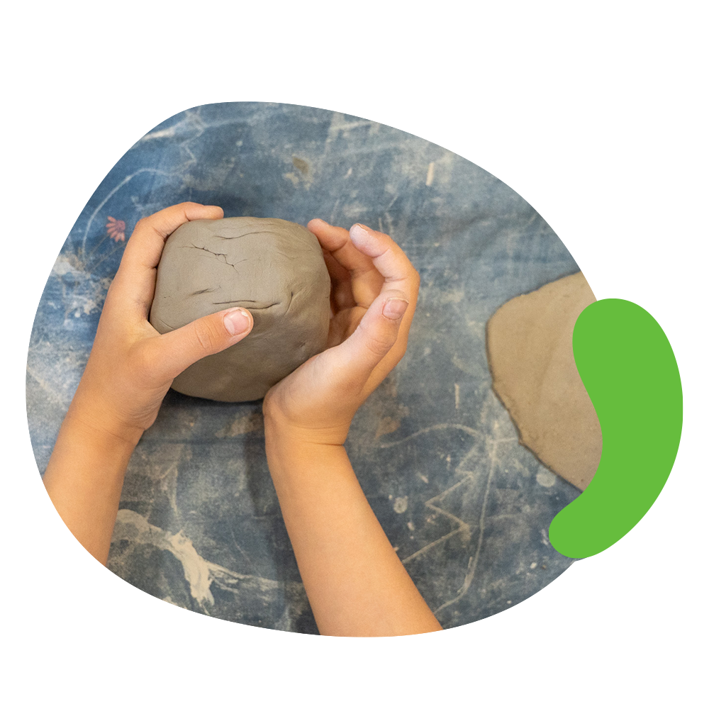
Kreatywne spotkania inspirowane wybranymi dziełami artystów, których sednem jest radość z odkrywania kolorów i ich znaczenia w samopoczuciu młodego człowieka. Poprzez zabawę i aktywne działania poznajemy znane dzieła i sławnych artystów.
Podczas zajęć wspólnie podróżujemy przez świat technik wyrazu artystycznego, takich jak grafika, malarstwo, rzeźba i filcowanie. Kształtujemy wrażliwość na sztukę i rozwijamy ekspresję twórczą, pomagając dzieciom znaleźć odpowiednie dla siebie środki wyrazu.
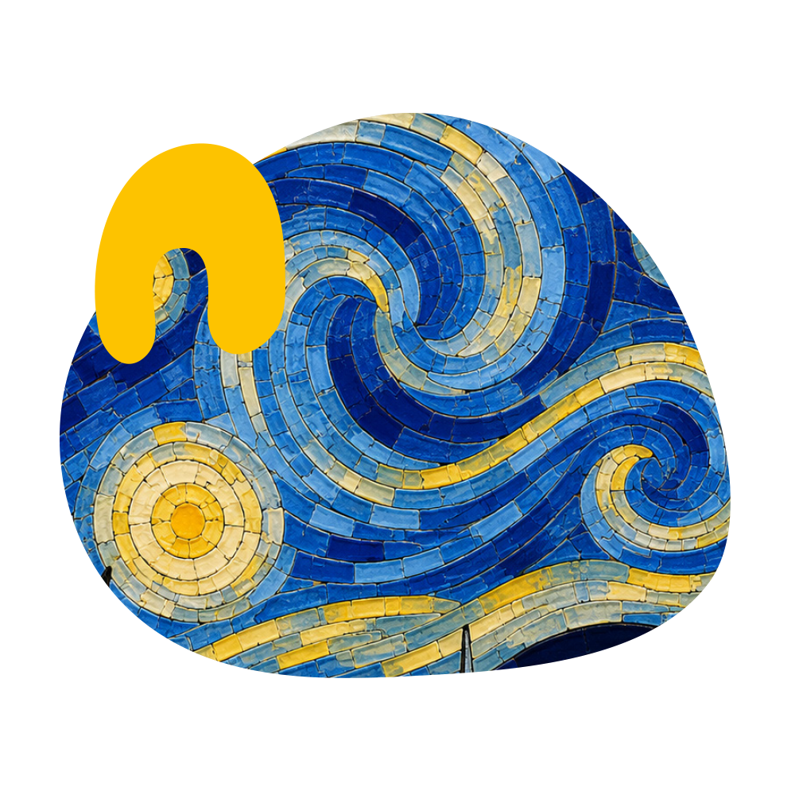
Każdego miesiąca spotykamy się z Fundacją Leśne Projekty, by razem z nimi poznawać okoliczny las. Warsztaty leśne odbywają się cyklicznie i zawsze zgodnie z rytmem natury – dostosowujemy się do sezonowych zmian w przyrodzie i do potrzeb dzieci, odpowiadając na ich energię i podążając za ciekawością.
Podczas zajęć doświadczamy przyrody wszystkimi zmysłami; obserwujemy, dotykamy, nasłuchujemy, wąchamy, czasami smakujemy. Używamy lup i lornetek, eksperymentujemy, budujemy, podążamy za tropami, a po zajęciach bujamy się w hamakach. Leśnym zajęciom często towarzyszy opowieść, która wprowadza dzieci w temat warsztatów.
Aktywności wspierają zdolności poznawcze i wiedzę przyrodniczą, a także rozwój dużej i małej motoryki, koordynację ruchową oraz integrację sensoryczną.
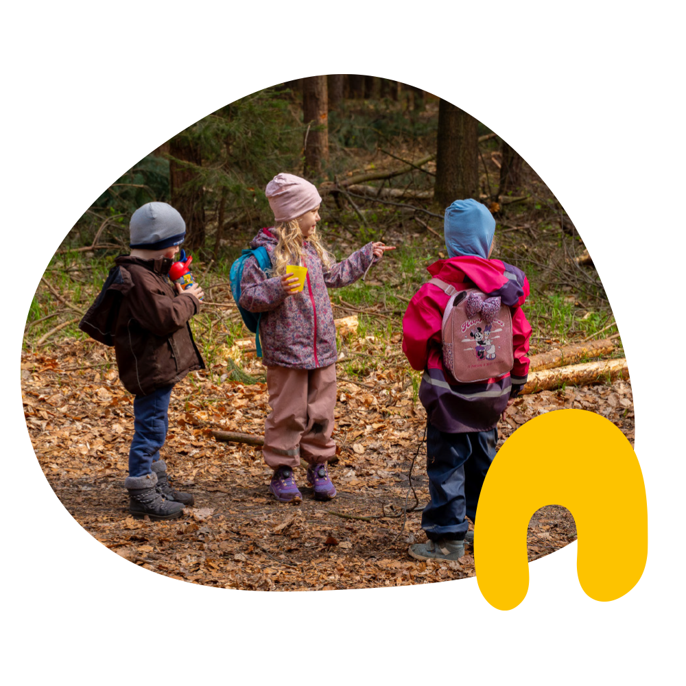